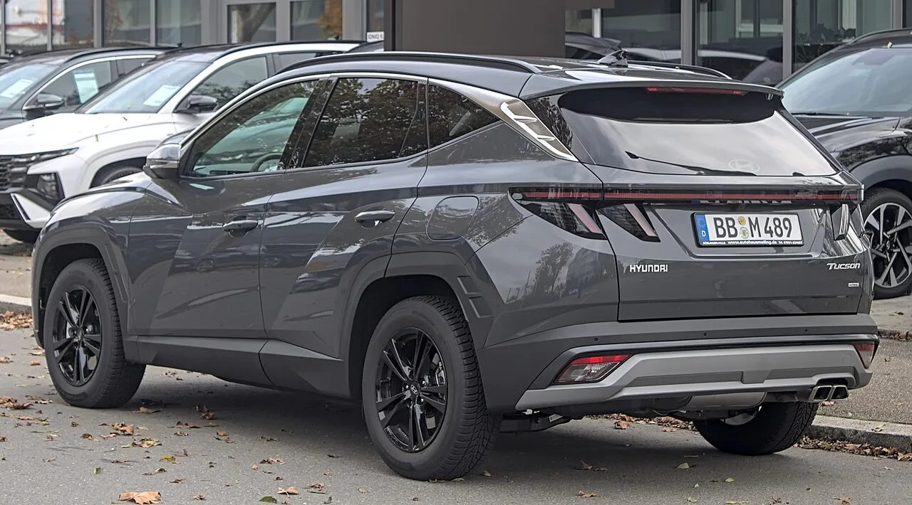
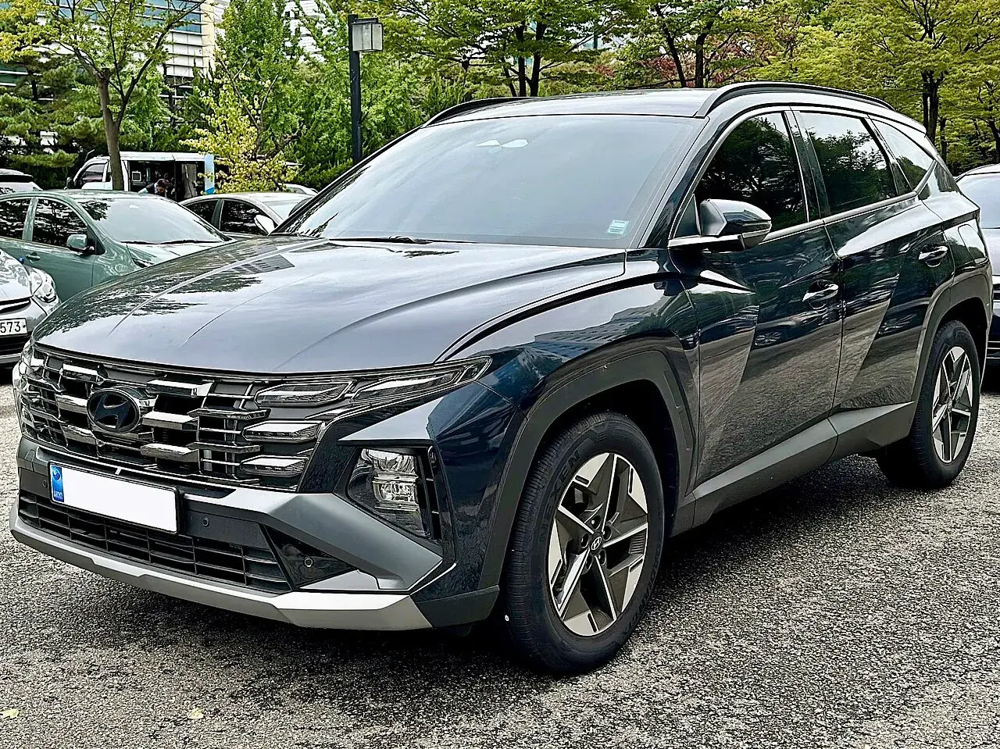
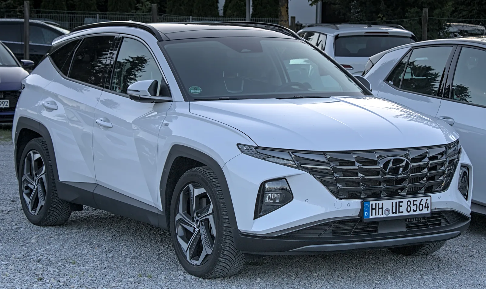
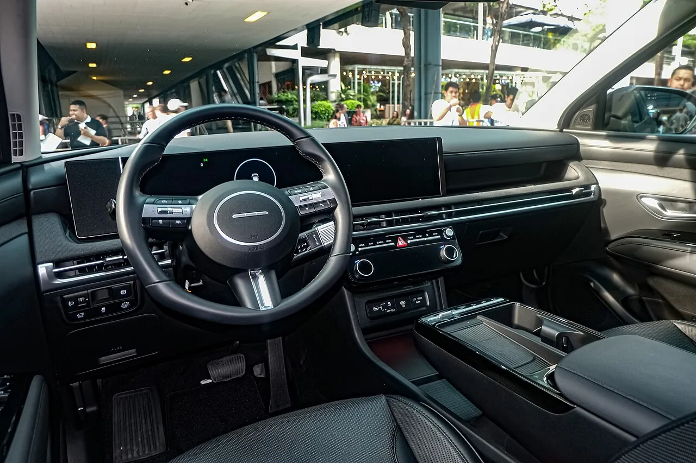
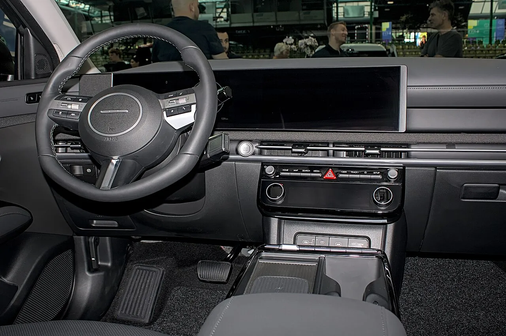
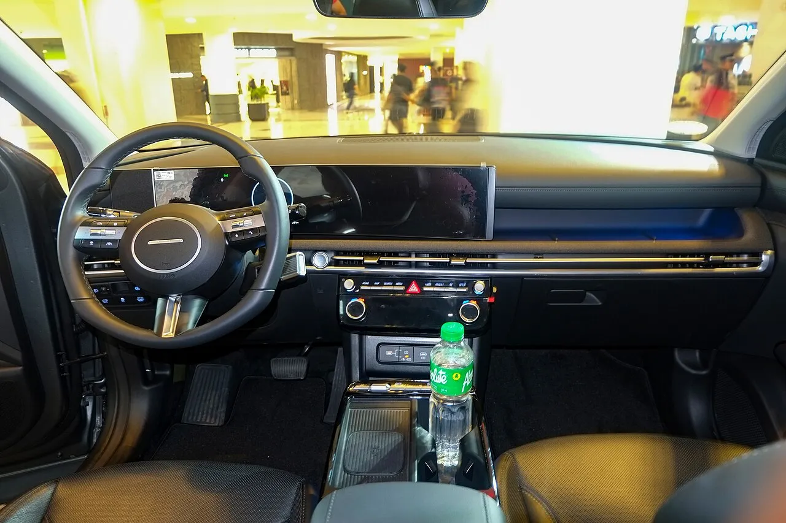

▲ 4세대 투싼(NX4) 페이스리프트(독일 촬영). 투싼과 투싼 하이브리드 10만 4,781대가 FCA 로직 설계 미흡으로 2028년 1월 30일까지 무상 시정 대상이다 ⓒ Alexander-93, Wikimedia Commons (CC BY-SA 4.0)
현대차가 투싼과 투싼 하이브리드 10만 4,781대에 대해 전방충돌방지보조(FCA) 시스템 관련 자발적 리콜을 진행 중이다. 일부 보도 제목은 "전방카메라 결함"이라고 적었지만, 공식 결함 내용은 카메라 부품 불량이 아니라 FCA 관련 로직(소프트웨어) 설계 미흡이다. 리콜 공표 기간은 2026년 7월 30일부터 2028년 1월 30일까지로 길다. 대상 여부와 시정 방법, 같은 시기 발표된 다른 리콜과의 차이를 국토교통부 발표와 보도로 정리했다.
1. 어떤 차가 대상인가 — 대수와 제작 기간
국토교통부는 8월 6일 현대차·기아·스텔란티스코리아·혼다코리아의 13개 차종 51만 2,393대 리콜을 발표했고, 이 가운데 투싼 계열이 FCA 건이다. 시정 조치는 발표보다 앞선 7월 30일부터 시작됐다. 제작 기간은 한 보도에서만 확인되며, 투싼(NX4 PE)은 2023년 7월 24일~2026년 3월 16일, 투싼 하이브리드(NX4 PE HEV)는 2023년 11월 17일~2026년 3월 16일 생산분이다.
| 차종 | 대수 | 제작 기간(단일 보도 기준) | 시정 시작 |
|---|---|---|---|
| 투싼(NX4 PE) | 5만 1,017대 | 2023.7.24 ~ 2026.3.16 | 2026.7.30 |
| 투싼 하이브리드(NX4 PE HEV) | 5만 3,764대 | 2023.11.17 ~ 2026.3.16 | 2026.7.30 |
| 합계 | 10만 4,781대 | 공표 기간 2026.7.30 ~ 2028.1.30 | |
참고 제작 기간은 국토교통부 원문이 아닌 보도 인용이며, 자동차리콜센터 상세 페이지에서는 확인하지 못했다. 대수(5만 1,017대·5만 3,764대), 결함 표현, 시정 시작일(7월 30일)은 여러 매체가 같은 값을 전한다. 해외에서는 같은 FCA 건의 대상 기간이 시장마다 다르다. 우루과이 공고는 2023년 4월~2026년 4월, 베트남은 2024년 10월~2026년 6월 생산분이다. 내 차가 해당되는지는 반드시 차량번호·차대번호 조회로 확인해야 한다. 같은 연식이라도 제작 시점에 따라 대상에서 빠질 수 있다.
2. '전방카메라 결함'일까 'FCA 로직'일까 — 정확히는 소프트웨어다

▲ 4세대 투싼(NX4) 페이스리프트(독일 촬영). FCA는 전방카메라가 보내는 정보를 소프트웨어가 해석해 경고·자동제동을 결정한다 ⓒ Alexander-93, Wikimedia Commons (CC BY-SA 4.0)
검색하면 두 표현이 섞여 나온다. MSN에 실린 기사 제목은 "전방카메라 결함"이고, 국토교통부 발표와 현대차 리콜 공표는 "전방충돌방지 보조시스템의 소프트웨어 설계 미흡에 따른 오작동"이다. 두 표현은 같은 리콜을 가리키되 층위가 다르다. FCA는 전방카메라가 보낸 영상을 제어 소프트웨어가 해석해 충돌 위험을 판단하고, 경고와 자동제동 시점을 정한다. 이번 건은 카메라 렌즈나 센서 같은 하드웨어 파손이 아니라, 이 판단 로직의 설계에 문제가 있었다는 뜻이다.
| 구분 | 표현 | 정확도 |
|---|---|---|
| 국토교통부 발표 | 전방충돌방지 보조시스템 소프트웨어 설계 미흡에 따른 오작동 | 공식 결함 내용 |
| 현대차 리콜 공표 | FCA 관련 로직 설계 미흡, 전방카메라 로직 수정 | 공식 시정 내용 |
| 일부 보도 제목 | 전방카메라 결함 | 시정 대상 모듈을 가리킨 축약 표현 |
시정 방법이 이를 뒷받침한다. 현대차 안내에 따르면 부품 교체가 아니라 전방카메라 소프트웨어 업데이트로 로직을 수정한다. 구체적인 오작동 양상은 국내 발표문에 자세히 나오지 않는다. 같은 건으로 먼저 공시된 해외 리콜 문서가 더 자세하다. 베트남(약 1만 3,620대)에서는 전방카메라 제어 소프트웨어의 민감도 설정 때문에 일부 교통 상황에서 시스템이 예상보다 이른 시점에 경고하고 자동제동을 건다고 설명하고, 소프트웨어 업데이트로 FCA 작동 매개변수를 조정한다고 밝혔다. 국내 결함도 같은 계열로 보이지만 국내 발표문이 이 문장을 그대로 쓴 것은 아니다(카프리즘 추정). 카메라 하드웨어 자체가 고장 난 경우와 달리 부품 교체 대기 없이 소프트웨어 업데이트로 끝나는 이유다.
3. 어떤 증상이 문제인가 — 미국 42만 대 리콜과 같은 뿌리

▲ 4세대 투싼(NX4) 페이스리프트 전면. 5월 미국에서도 2025~2026년형 약 42만 대가 FCA 소프트웨어 문제로 리콜됐다 ⓒ Benespit, Wikimedia Commons (CC BY-SA 4.0)
한국 리콜에 앞서 5월 25일 현대차는 미국에서 2025~2026년형 투싼, 투싼 하이브리드, 투싼 플러그인 하이브리드, 싼타크루즈 42만 1,078대를 리콜했다. 미국 도로교통안전청(NHTSA) 문서는 전방카메라 소프트웨어 오류로 FCA가 실제 위험이 아닌 상황에서도 개입해 예상치 못한 자동제동이 걸릴 수 있다고 설명했다. 보도에 따르면 후미 추돌 사고 4건이 접수됐고 치명적인 인명 피해는 없었다. 한국 국토교통부 발표에는 사고 접수 건수가 포함돼 있지 않다.
| 구분 | 한국(8월 발표) | 미국(5월 공시) |
|---|---|---|
| 대상 차종 | 투싼, 투싼 하이브리드 | 투싼, 투싼 HEV·PHEV, 싼타크루즈 |
| 대수 | 10만 4,781대 | 42만 1,078대 |
| 결함 설명 | FCA 로직(소프트웨어) 설계 미흡 | 전방카메라 소프트웨어 오류로 FCA 불필요 개입 |
| 시정 | 전방카메라 소프트웨어 업데이트 | 전방카메라 소프트웨어 업데이트 |
| 사고 보고 | 국토부 발표에 언급 없음 | 후미 추돌 4건, 치명적 인명 피해 없음(일부 보도, 다른 보도에는 건수 없음) |
| 대상 연식·기간 | 2023~2026년 제작(단일 보도) | 2025~2026년형 |
| 국가 | 대수 | 대상·기간 | 비고 |
|---|---|---|---|
| 한국 | 10만 4,781대 | 투싼·투싼 하이브리드, 공표 2026.7.30~2028.1.30 | 소프트웨어 업데이트 |
| 미국 | 42만 1,078대 | 2025~2026년형 투싼·HEV·PHEV·싼타크루즈, 5월 공시 | 무상 소프트웨어 업데이트 |
| 베트남 | 약 1만 3,620대 | 2024.10.2~2026.6.2 생산, 리콜 기간 2026.6.29~2035.6.29 | FCA 작동 매개변수 조정 |
| 남아프리카 | 337대 | 투싼 N Line(6월 보도) | 제동 결함 보도 |
이렇게 국가별 법규에 따라 리콜 대수와 공표 기간만 다를 뿐 같은 소프트웨어 문제가 여러 시장의 NX4 투싼에 걸린 셈이다. 한국의 공표 기간이 2028년 1월까지인 반면 베트남은 2035년까지로 훨씬 길다. 운전자가 체감하는 증상은 앞에 장애물이 없는데도 경고음이 울리거나 차가 순간 감속하는 경우다. 이런 증상이 반복된다면 서비스센터에 증상을 기록해 두는 것이 좋다.
4. 내 차 확인하고 무상 시정 받는 법

▲ 4세대 투싼(NX4, 독일 촬영). 투싼과 투싼 하이브리드 모두 같은 FCA 로직 수정 대상이다 ⓒ Alexander Migl, Wikimedia Commons (CC BY-SA 4.0)
확인은 자동차리콜센터에서 차량번호로 조회하는 것이 가장 정확하다. 현대차 고객센터(080-600-6000)로도 문의할 수 있다. 대상 차량 소유자에게는 우편과 문자로 개별 안내가 가고, 안내를 받았다면 현대차 서비스센터에 예약해 소프트웨어 업데이트를 받으면 된다. 비용은 전액 무상이다. 보도에 따르면 이미 같은 결함으로 자비 수리를 한 경우에는 제조사에 비용 보상을 청구할 수 있다.
자동차리콜센터에서 차량번호로 리콜 대상 조회| 단계 | 할 일 | 비고 |
|---|---|---|
| 1 | 자동차리콜센터에서 차량번호 조회 | 우편·문자 통지 전에도 조회 가능 |
| 2 | 현대차 서비스센터·블루핸즈 예약 | 소프트웨어 업데이트라 통상 장시간 입고는 필요 없는 방식(소요 시간은 센터에 확인) |
| 3 | 시정 후 확인서 보관 | 중고차 매각 시 리콜 이행 여부가 확인됨 |
| 4 | 자비 수리 이력 있다면 보상 청구 | 영수증 보관 필수 |
참고 공표 기간(2028년 1월 30일까지)은 "그때까지 미뤄도 된다"는 뜻이 아니다. 리콜 대상 차량은 시정 전까지 FCA가 오작동할 수 있고, 리콜 미이행 차량은 중고차 거래·점검 단계에서 걸릴 수 있다. 가능한 한 빨리 받는 것이 안전하다.
5. 8월 51만 대 리콜 속 투싼은 사유가 다르다
이번 투싼 건은 8월 6일 발표된 13개 차종 리콜 가운데 소프트웨어 문제로 분류되는 항목이다. 같은 발표 안에서도 사유가 서로 다르다. 차종별 결함을 나란히 놓으면 투싼 FCA만 "주행 중 운전 보조 기능 오작동"이라는 점이 드러난다. 나머지는 화재·연료 누유 같은 부품·제어 문제다. 전체 개요는 13개 차종 51만 대 리콜 기사에서 다뤘다.
| 차종 | 대수 | 결함 사유 |
|---|---|---|
| 투싼·투싼 하이브리드 | 10만 4,781대 | FCA 소프트웨어 설계 미흡, 오작동 |
| 그랜저 등 5개 차종 | 12만 7,059대 | 엔진 부품 너트 체결 불량, 연료 누유·화재 위험 |
| 아반떼 등 2개 차종 | 16만 8,181대 | 하이브리드 통합제어기 소프트웨어, 내부 소자 과열 |
| 기아 K8·카니발 | 10만 9,237대 | 엔진 부품 결함, 화재 위험 |
| 지프 체로키 | 711대 | 동력전달장치 조립 불량 |
| 혼다 오디세이 | 2,424대 | 후방카메라 기판 부식 |
같은 소프트웨어 설계 문제이지만 아반떼 하이브리드는 소자 과열(화재 위험), 투싼은 오경보·오제동(사고 위험)이어서 위험 유형이 다르다. 투싼은 불이 나는 결함이 아니라 필요 없는 순간에 개입하는 결함이므로, 시정 전까지는 후방 차량과의 간격을 평소보다 넉넉히 두는 정도의 방어운전이 현실적이다.

▲ 투싼 하이브리드(NX4 PE) 실내(해외 촬영). 운전석 계기판과 센터 디스플레이가 이어진 구성이다 ⓒ Ethan Llamas, Wikimedia Commons (CC BY-SA 4.0)
6. 시정 전까지 어떻게 운전할까 — 증상 기록과 방어운전 체크리스트

▲ 투싼 페이스리프트 운전석(독일 오토살롱 전시차). 증상이 나타나면 그 순간의 속도·도로 상황을 기록해 두면 서비스센터 상담에 도움이 된다 ⓒ Alexander-93, Wikimedia Commons (CC BY-SA 4.0)
이번 결함은 사고 위험이 큰 쪽이 "차가 안 서는 것"이 아니라 "필요 없는 순간 서는 것"이라는 점이 특징이다. 해외 공시 문서는 예상보다 이른 시점의 경고와 자동제동을 설명하고, 미국 문서는 불필요한 급제동이 뒤차 추돌 위험을 높인다고 적었다. 서비스센터 예약이 밀려 바로 시정을 받지 못하더라도 다음 항목은 스스로 점검할 수 있다.
| 상황 | 할 일 | 이유 |
|---|---|---|
| 앞에 아무것도 없는데 경고음·감속이 반복 | 발생 일시·속도·도로·날씨를 메모하고 블랙박스 영상 보관 | 서비스센터에 증상을 구체적으로 전달할 수 있다 |
| 고속도로·정체 구간 주행 | 뒤차와 충분한 간격 확보, 급가속 후 차간 거리 재확인 | 불필요한 제동이 걸려도 추돌 위험을 줄인다 |
| FCA 설정 변경 고민 | 사양에 따라 설정 메뉴가 다르므로 임의 해제보다 서비스센터와 상담 | 기능을 끄면 정상 상황의 충돌 방지 보조도 사라진다 |
| 서비스센터 예약 | 리콜 문자·우편이 없어도 자동차리콜센터 조회 후 직접 예약 | 공표 기간이 길어 개별 통지가 늦을 수 있다 |
| 중고차 매각 예정 | 시정 완료 확인서를 보관 | 미이행 차량은 거래·점검 단계에서 걸릴 수 있다 |

▲ 투싼 하이브리드 실내(해외 촬영). 이번 리콜은 하이브리드와 가솔린 모두 같은 FCA 로직 수정 대상이다 ⓒ Ethan Llamas, Wikimedia Commons (CC BY-SA 4.0)
7. 정리 — '카메라 교체'가 아니라 '소프트웨어 업데이트'다
체크포인트
- 대상은 투싼 5만 1,017대와 투싼 하이브리드 5만 3,764대, 합계 10만 4,781대다.
- 공식 결함은 FCA 관련 로직(소프트웨어) 설계 미흡이며, 시정은 전방카메라 소프트웨어 업데이트다.
- 공표 기간은 2026년 7월 30일~2028년 1월 30일, 비용은 전액 무상이다.
- 내 차 확인은 자동차리콜센터 차량번호 조회나 현대차 080-600-6000이다.
- 8월 51만 대 리콜의 다른 차종(연료 누유·하이브리드 과열)과 사유가 다르다.
FCA가 필요 없는 순간 개입한다면 서비스센터에 증상을 알리고 시정을 받는 것이 방법이다. 시정 전까지 운전자 보조 기능을 임의로 끌지는 말고, 운전 중 이상 증상이 반복되면 점검을 우선하자.